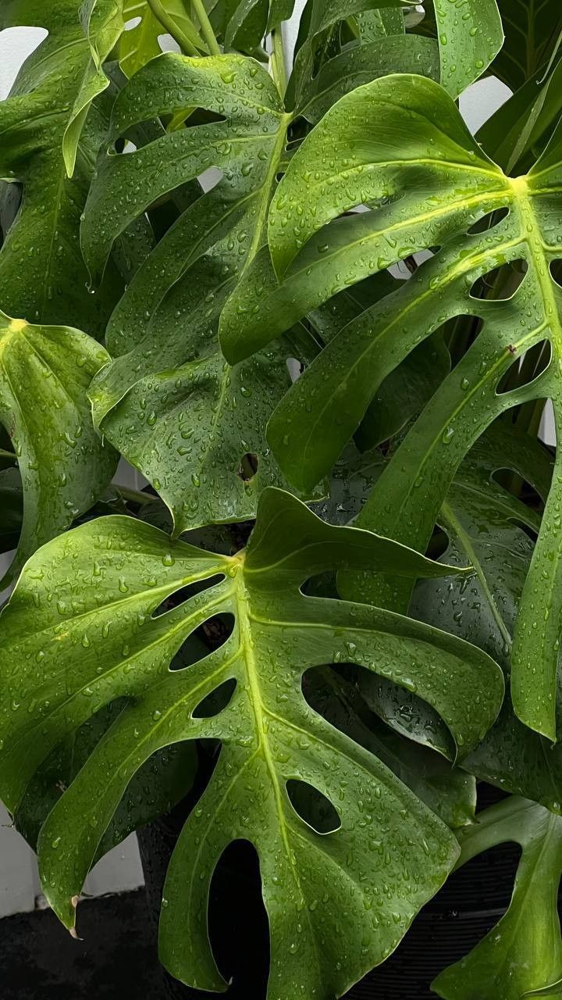
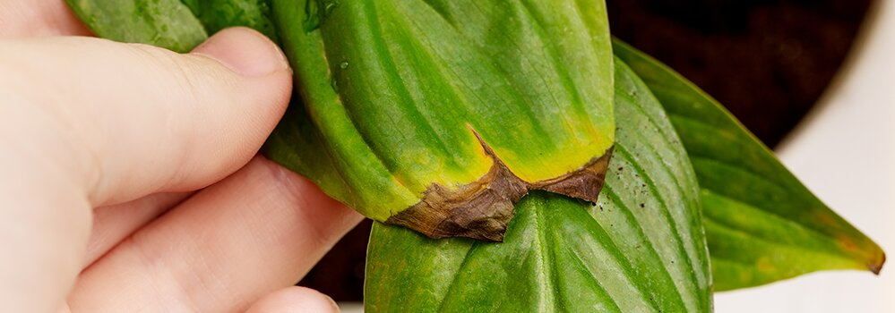
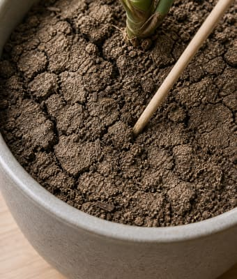
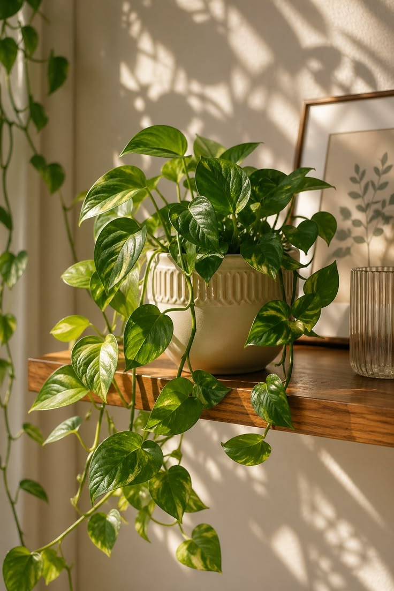
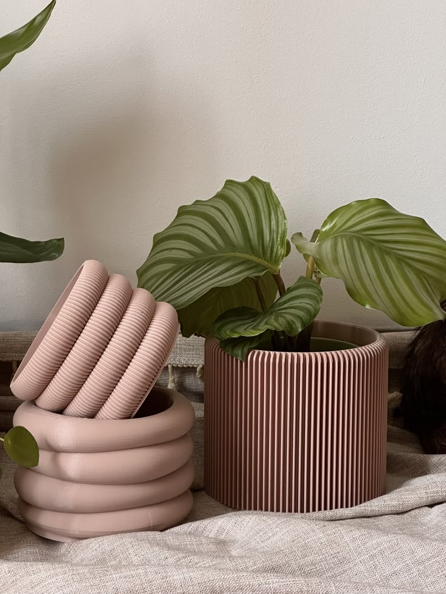
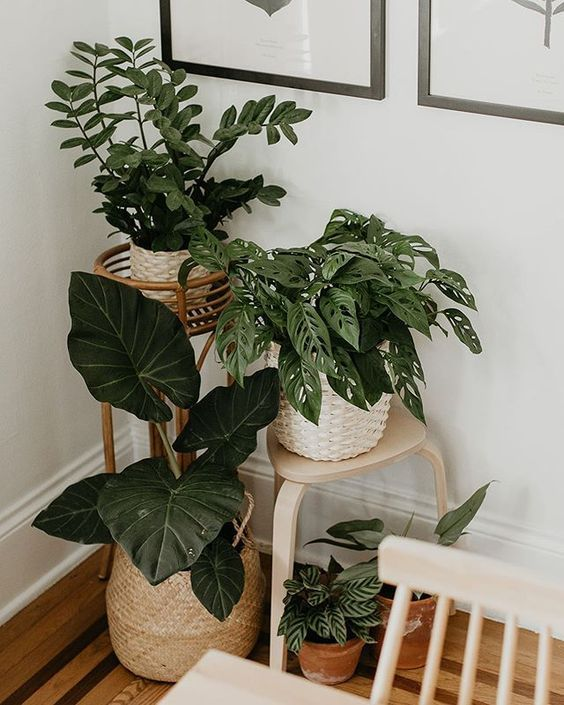

Когда у растения желтеет лист, появляются пятна или оно долго стоит на месте, обычно хочется сразу что-то поменять в уходе: полить, пересадить, купить удобрение.
Я помню свою монстеру в первый год: листья желтели один за другим, а я то наливала воды, то пересаживала, потому что казалось, что так и надо. Стало только хуже, пока я не начала смотреть на растение внимательнее, а не хвататься за первое решение из интернета.
Здесь я собрала то, на что сама смотрю, когда приходит вопрос про растение, с которым что-то изменилось в уходе или внешнем виде. Это не готовый ответ на любую ситуацию, но помогает понять, с чего начать и куда двигаться дальше, чтобы не усугубить своими же действиями.
В этой шпаргалке я рассмотрю три ситуации, с которыми чаще всего ко мне приходят: желтеют листья, появляются пятна, растение перестало расти. На второй странице короткий порядок действий, который подходит почти в любом из этих случаев.

Шпаргалка Mary Blooms
@mary.bloooms
Чаще всего мне приходят сообщения вроде «что делать, листья желтеют» или «появились пятна, помогите». Обычно в этот момент уже хочется срочно полить, пересадить или купить удобрение. Я это хорошо понимаю, сама так делала.
Но по одному листу или одному пятну редко можно сразу сказать, что именно не так. Сначала я смотрю на всё вместе: где стоит растение, когда его поливали, что в уходе менялось за последние недели.
С листьями бывает обманчиво: снаружи видно желтизну или пятно, а причина часто в грунте и корнях. Грунт долго не просыхает, появился запах из горшка, растение вялое при влажной земле — это уже важные сигналы.
Вытаскивать растение из горшка сразу не нужно, но проверить грунт пальцем или деревянной палочкой обычно стоит.
Если растение недавно купили, ему часто нужно время привыкнуть к дому. В первые недели я стараюсь не пересаживать и не менять уход резко, а просто поставить туда, где есть рассеянный свет без прямого полуденного солнца, и понаблюдать.
Не поливала бы «на всякий случай», если грунт не проверили. Не пересаживала бы только потому, что растение выглядит грустно. Не давала бы удобрения, чтобы «подбодрить». И не меняла бы сразу и место, и полив, и горшок, иначе потом непонятно, что именно сработало или навредило.
Это один из вопросов, с которым мне чаще всего пишут. И почти всегда за ним стоит тревога: «я уже что-то сделала не так» или «растение умирает». Чаще всего это не так.
Желтеют листья у многих растений время от времени, и важно понять, это отдельный случай или сигнал, что в уходе что-то идёт не так.
Я смотрю на три вещи: сколько листьев желтеет, какой грунт в горшке и что менялось в последние недели. Один пожелтевший лист редко что-то объясняет сам по себе, поэтому смотрю на всё вместе.
| Что видите | Что это может значить | Что сделать сейчас |
|---|---|---|
| Желтеет один нижний лист, остальные зелёные | часто естественное старение | обычно ничего, просто наблюдать |
| Желтеет несколько листьев, грунт долго мокрый | часто перелив | не поливать, проверить дренаж, дать грунту просохнуть |
| Листья потеряли упругость, грунт сухой, края сухие | часто пересушка | полить после просушки, не заливать сразу большим объёмом |
| Растение бледнеет, тянется к окну | часто мало света | поставить ближе к окну, переносить постепенно |
| Желтеют листья после покупки или перестановки | часто адаптация | не пересаживать, не менять уход резко, понаблюдать 2–3 недели |
Пояснение Слово «часто» здесь важно. У разных растений одни и те же признаки могут означать разное, поэтому смотрите не только на лист, но и на грунт, свет и то, как быстро всё меняется.
Если грунт пахнет затхло, долго не просыхает или растение вялое при влажной земле, я бы сначала разобралась с поливом, а не срезала желтые листья один за другим. То, что мы видим на листе, нередко начинается у корней.
Не срезала бы все жёлтые листья сразу. Не пересаживала бы «на всякий случай». Не подкармливала бы, чтобы «вернуть зелень». И не поливала бы каждый день, если грунт и так не просыхает.
Если после корректировки полива и света ничего не меняется недели две, или желтеют листья один за другим без остановки, тогда уже нужен разбор именно вашего растения, а не общих советов.
Когда появляются пятна, многие сразу думают про болезнь или вредителей. Я сама раньше так же паниковала и начинала искать, чем обработать растение.
Со временем поняла: не каждое пятно опасно. И по одному пятну на фото обычно мало что понятно, поэтому я смотрю, меняется ли оно со временем и что происходит с грунтом.

Пятно не растёт неделю и больше, ткань под ним плотная, остальные листья выглядят нормально. У некоторых растений тёмные или светлые участки на листьях это особенность вида или реакция на свет, а не болезнь.
Если растение в целом выглядит здоровым и продолжает выпускать новые листья, одно пятно не всегда повод для срочных действий.
Пятно увеличивается, ткань вокруг мягкая или желтеет, появляются новые пятна на других листьях. Если грунт долго мокрый, а на листе появились бугорки или «мокрые» участки, это может быть связано с водой и корнями.
На изнанке листа стоит посмотреть отдельно: нет ли мелких точек, паутинки, липкого налёта.
Не обрезать всё сразу. Не начинать обработки «на всякий случай». Не пересаживать и не подкармливать растение в этот момент.
Если пятна продолжают появляться, растение сбрасывает листья или за несколько дней становится только хуже, лучше остановиться и разобраться с конкретной ситуацией, а не пробовать всё подряд.
Когда проходят недели, а новых листьев нет, кажется, что растение «стоит мёртвым грузом». С таким ощущением ко мне тоже приходят, и оно очень узнаваемое.
Но отсутствие роста не всегда значит, что растение погибает. Иногда оно просто на паузе, иногда ему не хватает света или полив идёт не в ту сторону, а иногда оно ещё привыкает к новому дому.
Начинаю с простых вопросов: когда растение купили, какой сейчас сезон, где оно стоит и как ведёт себя грунт. Один признак «нет новых листьев» причину сам по себе не объясняет, поэтому смотрю на всё вместе.
| Что видите | Что это может значить | Что сделать сейчас |
|---|---|---|
| Зима, мало света, растение выглядит нормально | часто сезонная пауза | не менять уход резко, не подкармливать «для роста» |
| Недавно купили или пересадили | часто адаптация | понаблюдать 2–3 недели, не менять всё сразу |
| Растение тянется к окну, листья мельчают | мало света | поставить ближе к окну с рассеянным светом, переносить постепенно |
| Грунт сохнет очень быстро, корни видны у края горшка | часто мало места для корней | запланировать пересадку, когда растение в хорошем состоянии |
| Грунт долго мокрый, новых листьев нет | полив или корни | не поливать, проверить просушку, понаблюдать |
Если земля пахнет затхло или растение стоит на месте при постоянно влажном грунте, я бы сначала разобралась с поливом. Новые листья не появляются, когда корням тяжело, даже если снаружи растение ещё выглядит нормально.
Не подкармливала бы, чтобы «заставить расти». Не пересаживала бы в горшок побольше без причины. Не ставила бы растение на самое солнечное место за один день. И не поливала бы чаще, если грунт и так не просыхает.
Если прошло больше месяца, свет в порядке, полив выровнен, а растение всё равно стоит на месте или начинает сбрасывать листья, тогда уже стоит разбираться глубже и смотреть на ваш случай отдельно.
С поливом у новичков чаще всего путаница. Кто-то поливает раз в неделю «как написано в интернете», кто-то каждый день «чтобы не пересушить», а потом удивляется, почему желтеют листья при мокром грунте.
Такая ситуация у моих клиентов повторяется часто: растение выглядит грустно, хозяйка поливает ещё раз, и становится хуже. У меня с монстерой в первый год было похоже, только я ещё и пересаживала между поливами.
Полив здесь один из главных подозреваемых. Часто проблемы начинаются не из-за капризности растения, а из-за условий ухода.

Я не ориентируюсь на календарь. Смотрю на грунт пальцем или деревянной палочкой на глубине примерно до середины горшка.
Звучит просто, но именно этот шаг многие пропускают.
Правило Если не знаете, как правильно поливать ваше растение, начните с осторожного полива после просушки на половину высоты горшка и понаблюдайте, как быстро снова высохнет грунт.
1. Грунт пахнет затхло или кисло 2. Растение вялое, хотя земля мокрая 3. Желтеют листья при влажном грунте, который долго не просыхает.
В таких случаях я сначала уменьшаю полив и смотрю, как ведёт себя грунт, а не хватаюсь за удобрения или пересадку. С листа мы часто видим следствие, а начинается оно нередко в горшке.
Папоротники и многие тропические растения не терпят пересушек. Поэтому грунт надо постоянно держать влажным, но не мокрым
Большинство привычных комнатных растений, вроде монстеры, фикуса или драцены, комфортнее чувствуют себя, когда верхний слой грунта успевает подсохнуть. Часто это просушка до середины горшка.
Суккуленты, кактусы и замиокулькасы хорошо переносят полную просушку. Им полив нужен реже, и залить их проще, чем кажется.
Когда мало света и в квартире жарят батареи, поливать обычно нужно реже, чем летом. Если растение стоит на месте и грунт не просыхает неделями, лишний полив только мешает.
Часто растение ставят туда, где красиво: в угол гостиной, на полку подальше от окна, в коридор. Снаружи оно ещё выглядит нормально, а через пару месяцев начинает тянуться к свету, мельчают листья или опадают нижние.
С такими фото ко мне приходят регулярно, и почти всегда вопрос звучит как «я же поливаю, что не так». А дело не в поливе.
Свет проверяю раньше, чем начинаю менять уход. Без нормального освещения растение просто не может нормально расти, как бы аккуратно вы ни поливали.

Растение тянется к окну, междоузлия становятся длиннее, новые листья мельче предыдущих. Нижние листья могут опадать, хотя с поливом всё в порядке.
Если узнали свою ситуацию, попробуйте поставить горшок ближе к окну, куда попадает рассеянный дневной свет. Переносить лучше постепенно, особенно если растение долго стояло в тени.
На листьях появляются бледные или коричневые пятна, лист скручивается, края подсыхают. Такое часто бывает летом на южном окне без притенения, если растение к нему не привыкло.
Я сама однажды поставила эпипремнум ближе к окну и думала, что ему наконец хорошо. А он начал желтеть, потому что зимой я люблю долго проветривать спальню, и рядом с окном становилось слишком холодно.
Свет был, а условия всё равно неудачные. Поэтому смотрю не только на окно, но и на то, не дует ли туда холодный воздух.
На восточном и западном окне многим растениям комфортно: свет есть, но он не такой жёсткий, как в полдень на юге.
На южном окне летом часто нужно притенение, особенно если листья начинают обгорать.
На северном окне живут многие растения, которые переносят меньше света, но даже они со временем могут показать, что им всё-таки мало освещения.
Если свет и место в порядке, а растение всё равно выглядит угнетённым, тогда можно вернуться к поливу и посмотреть, что происходит с грунтом.
Если сомневаетесь, посмотрите, куда «смотрят» листья. Когда они разворачиваются к окну, это обычно хороший знак.
«Я уже всё перепробовала, а растение только хуже» — такие сообщения я получаю регулярно. И когда начинаешь разбирать по шагам, обычно выясняется, что за одну неделю было и пересаживание, и новый полив, и удобрение, и перестановка на другое окно.
Каждое действие по отдельности могло быть не страшным. Но вместе они дают растению слишком много стресса сразу, и потом уже непонятно, что именно сработало или навредило.
Я сама в начале пути делала похожее. Сейчас стараюсь сначала остановиться и посмотреть, что происходит, а не добавлять новых действий.
«Раз в неделю всем растениям» звучит удобно, но в жизни так редко работает. У одного грунт сохнет за два дня, у другого неделю лежит влажным. Перелив я чаще всего вижу у тех, кто поливает по привычке.
Растение выглядит грустно, и хочется пересадить в свежий грунт, будто это сразу всё исправит. На практике пересадка сама по себе стресс. Особенно осторожно я отношусь к свежекупленным растениям и к зиме, когда мало света.
Когда листья желтеют или растение стоит, очень хочется его подкормить. Но угнетённому растению новая подкормка часто не нужна. Сначала стоит разобраться со светом и поливом, а уже потом думать о питании.
Переставили ближе к окну, пересадили, изменили полив. Через неделю растение стало хуже, но уже неясно, что именно не подошло. Я стараюсь менять что-то одно и смотреть на реакцию хотя бы неделю-две.
Свежекупленное растение часто выглядит здоровым, а вредителей или проблему с корнями снаружи не видно. Держу отдельно несколько недель и раз в неделю осматриваю листья, в том числе с изнанки.
Растению редко нужно много действий подряд. Иногда ему нужно не новое средство или действие, а время, чтобы восстановиться после изменений.
Если за пару недель ничего не меняется или становится хуже, тогда уже стоит копать глубже, а не добавлять ещё один «способ спасения».
Когда приносишь растение из магазина, руки сами тянутся что-то сделать: сразу пересадить в красивый горшок, полить, поставить рядом с остальными, чтобы все были вместе.
Это очень понятная реакция. Я после покупки тоже раньше хотела «начать правильно» с первого дня и из-за этого часто делала лишнее.
На самом деле растение только что сменило условия. Ему нужно время привыкнуть к вашей квартире: к свету, температуре, влажности воздуха. В первые недели я стараюсь не усложнять уход, а дать растению спокойно освоиться.
Пересадку в первые две-три недели обычно откладываю, если нет острой причины: горшок совсем крошечный, грунт не просыхает неделями, явный запах из горшка.
Красивое кашпо можно поставить рядом, а само растение пока оставить в том горшке, в котором оно пришло.
Свежее растение и так переживает смену места. Пересадка, новый грунт и подкормка добавляют ещё один слой изменений. После такого «заботливого» старта нередко бывает, что растение как раз начинает сбрасывать листья или долго стоит на месте.
Держу новое растение отдельно от остальных несколько недель. Раз в неделю осматриваю листья, заглядываю на изнанку, смотрю, не появляется ли липкий налёт, точек или паутинки.
Поливаю только когда грунт подсох, а не по календарю.
Если за две-три недели растение выглядит спокойно, выпускает новые листья или хотя бы не ухудшается, значит, адаптация идёт нормально. Если же оно быстро вянет, грунт долго не просыхает или появляются новые пятна и желтизна, тогда лучше остановиться и разобраться, что именно пошло не так.


Когда с растением что-то не так, я сначала смотрю на грунт, свет и то, что менялось в уходе. Потом делаю одно изменение и жду, как растение ответит.
В этой шпаргалке я собрала тот же порядок: с чего начать, на что смотреть и чего лучше не делать в первые недели. Это помогает не паниковать и не хвататься за всё сразу.
Но по общим советам не всегда видно именно ваш случай — где стоит растение, каким выглядит грунт и что происходило в последние дни.
Напишите мне в Telegram и пришлите фото:
За пару сообщений скажу, на что смотреть в первую очередь и чего лучше не делать прямо сейчас.
Так спокойнее, чем снова гуглить и пробовать всё подряд.